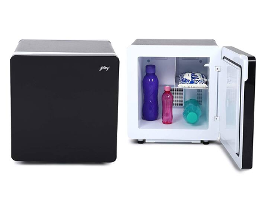
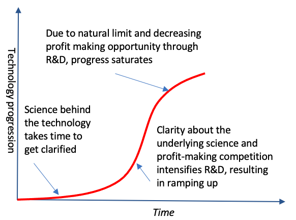

MGMT 457 W: Strategic Management of Innovation and Technology
Fall 2025
Kate Wang
Story of Refrigerator
Godrej & Boyce - A household appliance company serving the India Market
The Challenge:
In rural India, as many as 90 percent of families could not:
- Afford household appliances
- Access reliable electricity
- Have any means of refrigeration
Strategy A:Compact fridge
Reduce the cost of a conventional compressor-based refrigerator

Strategy B: Thermoelectric fridge
Small and portable refrigerator based on thermoelectric cooling
Strategy Tool: Technology S Curve

Strategy Tool: Consumer Adoption S Curve

Where are Strategy A and B on the Technology S Curve and Consumer S Curve?
Analysis Summary
Strategy A: Compact Fridge
Technology S Curve:
- Mature technology - compressor-based cooling
- Focus on cost optimization
- Incremental improvements
Consumer Adoption:
- Familiar technology
- Lower adoption barriers
- Targets mainstream market
Strategy B: Thermoelectric Fridge
Technology S Curve:
- Emerging technology - thermoelectric cooling
- Higher development potential
- Disruptive innovation
Consumer Adoption:
- New technology paradigm
- Early adopter market
- Higher adoption barriers initially
Group Discussion
What are the following technologies located on Technology S Curve and Consumer S Curve?
Group 1: Generative AI (Large Language Models like ChatGPT, GPT-4, Claude)

Group 2: Electric Vehicles (EVs)
Draw on the Board
Please draw your understanding of the technology S curve and consumer adoption S curve for your group technology discussion on the white board
Key Takeaways
🎯 Strategic Insights:
- Technology S Curve helps identify where technologies are in their development lifecycle
- Consumer Adoption S Curve reveals market readiness and adoption patterns
- Different strategies suit different positions on these curves
💡 Business Applications:
- Incremental innovation (Strategy A) works well with mature technologies
- Disruptive innovation (Strategy B) leverages emerging technologies
- Understanding both curves is crucial for strategic decision-making
🚀 Remember:
The right strategy depends on where you are on both the Technology and Consumer Adoption S Curves!
Simulation: Should IBM develop more Software or Cloud Services?

Simulation Instructions
Start 3:10 pm and submit 4:40 pm
- https://bcs.statherian.com
- Sign up
- Grab the information file for your role
- Discuss within your team to make decisions
- Submit your answers
- 30 minutes